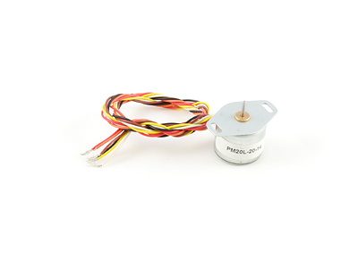

Stepper Bipolar HC
Product Features
This tiny bipolar stepper has a 1.8° step angle and 600 g·cm of holding torque.
Product Description
This is a nice, small, efficient stepper motor with good torque characteristics.
NEMA-17 Bipolar 48mm Stepper (0.9° Step Angle)
Product Features
This precise bipolar stepper has a 0.9° step angle and 4.28 kg·cm of torque at low speeds.
Product Description
This motor is a larger NEMA-17 motor that produces a whopping 4800g-cm of holding torque and fine resolution. The motor is also very efficient in converting current into torque and velocity.
NEMA-17 Bipolar 32mm Stepper
Product Features
This high speed bipolar stepper has a 3.75° step angle and 590 g·cm of torque at low speeds.
Product Description
This is our fastest Stepper Motor. It provides good torque at slightly less resolution than our other steppers.
NEMA-17 Bipolar 20mm Stepper
Product Features
This compact bipolar stepper has a 1.8° step angle and 450 g·cm of torque at low speeds.
Product Description
This motor is a NEMA-17 motor that is only 20mm long. Great for projects where space is restricted and that do not require too much torque.
NEMA-23 Bipolar 76mm Stepper
Product Features
This powerful bipolar stepper has a 1.8° step angle and 11.06 kg·cm of torque at low speeds.
Product Description
At 12.5 Kg-cm of holding torque, this is a powerful gearless stepper motor.
950g-cm Unipolar Stepper
Product Features
This affordable unipolar stepper has a 7.5° step angle and 710 g·cm of torque at low speeds.
Product Description
This is the motor you want if you are looking for a low cost unipolar stepper that needs to do some work.
140g-cm Unipolar Stepper
Product Features
This affordable unipolar stepper has a 7.5° step angle and 710 g·cm of torque at low speeds.
Product Description
This is the motor you want if you are looking for a low cost unipolar stepper that needs to do some work.
50g-cm Unipolar Stepper

Product Features
This high speed unipolar stepper has an 18° step angle and 30 g·cm of torque at low speeds.
Product Description
This motor is good for turning small knobs, buttons, etc.
NEMA-17 Bipolar 99.51:1 Planetary Gearbox Stepper
Product Features
This bipolar stepper with planetary gearbox has a 0.018° step angle and 48 kg·cm of torque at low speeds.
Product Description
This NEMA-17 motor has an integrated Planetary gearbox with a 991044/2057 :1 ratio. At 1.6 Amps (maximum current), this gearbox stepper can produce a maximum torque of 250 kg-cm. However, the gearbox is only rated for 48 kg-cm of continuous torque, and 100 kg-cm for brief overloads. Loading this gearbox stepper beyond the torque rating of the gearbox will shorten its useful life.
At the output of the gearbox, the step angle is approximately 0.018°. When using the step angle in calculations, you should derive the exact step angle by dividing 1.8° by the gearbox reduction ratio.
This particular revision of the motor is made by a different manufacturer, but should behave very similarly to the revision 0 version.
28STH32 NEMA-11 Bipolar Gearless Stepper Motor
Product Features
This tiny stepper with a rear shaft has a 1.8° step angle and 520 g·cm of torque at low speeds.
Product Description
This NEMA-11 motor generates 600 g-cm of holding torque at 0.67 Amps. It comes with the rear shaft exposed, so you can mount an encoder or shaft coupler.
28STH32 NEMA-11 Bipolar Stepper with 27:1 Gearbox
Product Features
This compact bipolar stepper with a rear shaft and a planetary gearbox has a 0.067° step angle and 14 kg·cm of torque at low speeds.
Product Description
This NEMA-11 motor has an integrated Planetary gearbox with a 26103/121 :1 ratio. It comes with the rear shaft exposed, so you can mount an encoder or shaft coupler.
28STH32 NEMA-11 Bipolar Stepper with 100:1 Gearbox
Product Features
This compact bipolar stepper with a rear shaft and a planetary gearbox has a 0.018° step angle and 32 kg·cm of torque at low speeds.
Product Description
This NEMA-11 motor has a Planetary gearbox with a 991044/2057 :1 ratio. It comes with the rear shaft exposed, so you can mount an encoder or shaft coupler.
35STH36 NEMA 14 Bipolar Gearless Stepper
Product Features
This bipolar stepper with rear shaft has a 1.8° step angle and 1.2 kg·cm of torque at low speeds.
Product Description
This NEMA-14 motor generates 1.4 Kg-cm of holding torque at 1 Amp. It comes with the rear shaft exposed, so you can mount an encoder or shaft coupler.
35STH36 NEMA 14 Bipolar Gearless Stepper
Product Features
This affordable bipolar stepper with a rear shaft has a 1.8° step angle and 3.3 kg·cm of torque at low speeds.
Product Description
This NEMA-17 motor generates 3.6 Kg-cm of holding torque at 1.7 Amps. It comes with the rear shaft exposed, so you can mount an encoder or shaft coupler.
42STH38 NEMA-17 Bipolar Stepper with 5.18:1 Gearbox
Product Features
This bipolar stepper with a rear shaft and a planetary gearbox has a 0.35° step angle and 18 kg·cm of torque at low speeds.
Product Description
This NEMA-17 motor has an integrated Planetary gearbox with a 52/11 :1 ratio. It comes with the rear shaft exposed, so you can mount an encoder or shaft coupler.
42STH38 NEMA-17 Bipolar Stepper with 14:1 Gearbox
Product Features
This bipolar stepper with a rear shaft and a planetary gearbox has a 0.13° step angle and 30 kg·cm of torque at low speeds.
Product Description
This NEMA-17 motor has an integrated Planetary gearbox with a 13212/289 :1 ratio. It comes with the rear shaft exposed, so you can mount an encoder or shaft coupler.
42STH38 NEMA-17 Bipolar Stepper with 26.85:1 Gearbox
Product Features
This bipolar stepper with gearbox and rear shaft has a 0.067° step angle and 30 kg·cm of torque at low speeds.
Product Description
This NEMA-17 motor has an integrated Planetary gearbox with a 26 103/121 :1 ratio. It comes with the rear shaft exposed, so you can mount an encoder or shaft coupler.
At 1.7 Amps, this stepper motor can produce a maximum torque of 77 kg-cm. However, the gearbox is only rated for 30 kg-cm of continuous torque, and 80 kg-cm for brief overloads. Loading this gearbox stepper beyond the torque rating of the gearbox will shorten its useful life.
42STH38 NEMA-17 Bipolar Stepper with 51:1 Gearbox
Product Features
This bipolar stepper with a rear shaft and a planetary gearbox has a 0.035° step angle and 48 kg·cm of torque at low speeds.
Product Description
This NEMA-17 motor has an integrated Planetary gearbox with a 50 4397/4913 :1 ratio. It comes with the rear shaft exposed, so you can mount an encoder or shaft coupler.
42STH38 NEMA-17 Bipolar Stepper with 99.51:1 Gearbox
Product Features
This bipolar stepper with a rear shaft and a planetary gearbox has a 0.018° step angle and 48 kg·cm of torque at low speeds.
Product Description
This NEMA-17 motor has an integrated Planetary gearbox with a 991044/2057 :1 ratio.It comes with the rear shaft exposed, so you can mount an encoder or shaft coupler.
57STH56 NEMA 23 Bipolar Precision Gearless Stepper
Product Features
This precision bipolar stepper with rear shaft has a 0.9° step angle and 11.2 kg·cm of torque at low speeds.
Product Description
This NEMA-23 motor generates 12 kg-cm of holding torque at 2.8 Amps. It comes with the rear shaft exposed, so you can mount an encoder or shaft coupler.
This motor is particulary suited for precision applications due to its 0.9° step angle.
57STH56 NEMA-23 Bipolar Gearless Stepper
Product Features
This high-speed bipolar stepper with a rear shaft has a 1.8° step angle and 11 kg·cm of torque at low speeds.
Product Description
This NEMA-23 motor generates 12.6 kg-cm of holding torque at 2.8 Amps. It comes with the rear shaft exposed, so you can mount an encoder or shaft coupler.
57STH56 NEMA-23 Bipolar Stepper with 4.25:1 Gearbox
Product Features
This bipolar stepper with a rear shaft and a planetary gearbox has a 0.42° step angle and 46.6 kg·cm of torque at low speeds.
Product Description
This NEMA-23 motor has an integrated Planetary gearbox with a 41/4 :1 ratio. It comes with the rear shaft exposed, so you can mount an encoder or shaft coupler.
57STH56 NEMA-23 Bipolar Stepper with 15:1 Gearbox
Product Features
This powerful bipolar stepper with a rear shaft and a planetary gearbox has a 0.12° step angle and 150 kg·cm of torque at low speeds.
Product Description
This NEMA-23 motor has an integrated Planetary gearbox with a
15 3/10 :1 ratio. It comes with the rear shaft exposed, so you can mount an encoder or shaft coupler.
57STH56 NEMA-23 Bipolar Stepper with 77:1 Gearbox
Product Features
This powerful bipolar stepper with a rear shaft and a planetary gearbox has a 0.023° step angle and 240 kg·cm of torque at low speeds.
Product Description
This NEMA-23 motor has an integrated Planetary gearbox with a
76 49/64 :1 ratio. It comes with the rear shaft exposed, so you can mount an encoder or shaft coupler.
57STH56 NEMA-23 Bipolar Stepper with 15:1 Gearbox
 Product Features
Product Features
This huge bipolar stepper with a rear shaft has a 1.8° step angle and 30 kg·cm of torque at low speeds.
Product Description
This NEMA-34 motor generates 34 kg-cm of holding torque at 2.8 Amps. It comes with the rear shaft exposed, so you can mount an encoder or shaft coupler.
86STH156 NEMA-34 Bipolar Gearless Large Stepper
Product Features
This massive bipolar stepper with a rear shaft has a 1.8° step angle and over 100 kg·cm of torque at low speeds.
Product Description
This NEMA-11 motor generates 122 kg-cm of holding torque at 4.2 Amps. It comes with the rear shaft exposed, so you can mount an encoder or shaft coupler.
We Provide:
- To be accessible, friendly, and helpful at all times.
- To answer the phone when you call, 24/7/365.
- Reply to your emails and support tickets within 24 hours.
- To provide timely information about new hardware.
- To provide all design documentations.
Please fulfill following request form to get more information!